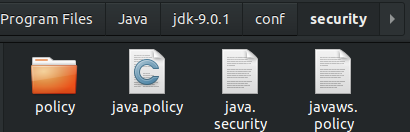
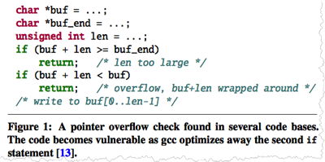

Xingbang Liu & Zijun Xia
3/7/2019
System processes lead to:
1. Gaining access right
2. Changing code
Java checks file source:
FilePermission filePermission=new FilePermission("/tmp/*","read,write");
SocketPermission socketPermission=new SocketPermission("192.168.0.1:8080","listen");
Java also checks permission:
public void checkPermission(Permission perm)
public ProtectionDomain getProtectionDomain()
public ProtectionDomain(CodeSource var1, PermissionCollection var2)
public final CodeSource getCodeSource()
public boolean implies(Permission var1)
public final Certificate[] getCertificates()
public final URL getLocation()
Java also has security policy file which grants the permission
1. Online compilers
Saves time
Saves resources
BUT user inputs are from Internet
1. Online compilers
Gaining access:
GetEnv(), system(): allow an attacker to study and execute any command on the remote machine
GetEnv(): allows a hacker to learn information about the machine that is otherwise concealed from the web interface, such as the username and OS version.
1. Online compilers
Maintaining control:
Hackers cannot input codes every time, so
execl() :allows the user to specify any arbitrary program to replace the current process
2. Code optimization
g_exit; //global variable
g_exit= 1; //will be modified to break
while(g_exit)
{
...
}
Will be modified as while(1)
2. Code optimization
catch the case when len is so large that buf + len wraps around and bypasses the first check
2. Code optimization
Also disable exploitable functions
{kind=link}